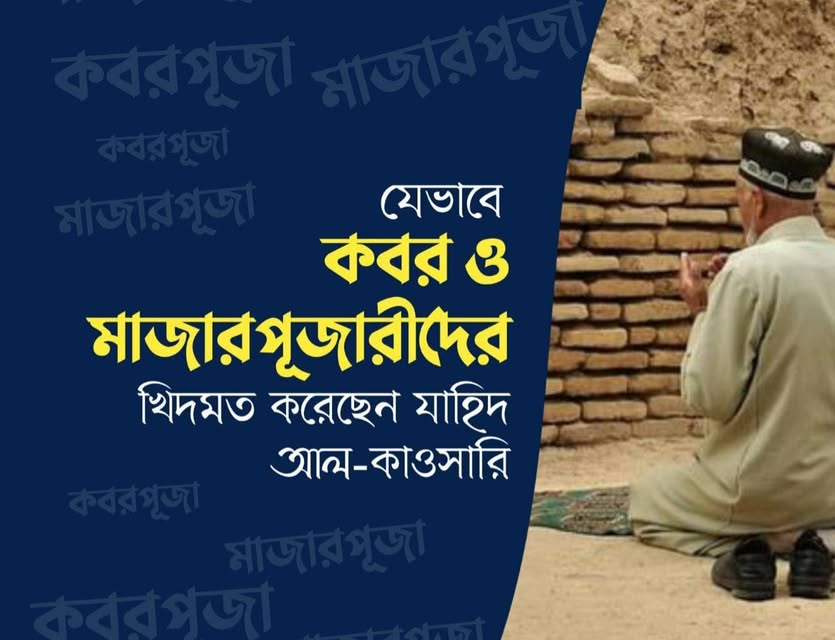

যাহিদ আল-কাওসারি যেভাবে ব্রেলভি এবং কবর ও মাজারপূজারীদের খেদমত করেছন
২৬ আগস্ট, ২০২২
যাহিদ আল-কাওসারি যেভাবে ব্রেলভি এবং কবর ও মাজারপূজারীদের খেদমত করেছন-
যাহিদ কাওসারি সাহেবের শিরক ও কুফরি আকিদার প্রমাণ বিগত এক পোস্টে দিয়েছিলাম। তাওহিদপ্রেমীদের কাছে তা পরিষ্কার। আজ দেখাব কীভাবে তিনি দ্বীনের খেদমতের পরিবর্তে বেদআতি-মুশরিক ব্রেলভি ও মাজারপূজারীদের খেদমত আঞ্জাম দিয়ে গেছেন। সাথে ইমাম আবু হানিফা রাহিমাহুল্লাহ ও অন্যান্য হানাফি ইমামের ফতোয়ার বিরোধিতার প্রমাণ নিয়েই আজকের পর্যালোচনা।
যাহিদ কাওসারির মতে কবরের পাশে মসজিদ নির্মাণ করা বা বরকত নেয়ার উদ্দেশ্যে কবরস্থানে সালাত আদায় করা বৈধ কাজ। এতে কোনো আপত্তি নেই!
এ ক্ষেত্রে তিনি আবু আব্দিল্লাহ মোহাম্মদ বিন খলিফা আল-উবাই এর উক্তি দলিল হিসেবে পেশ করেন-
فأما من اتخذ مسجداً قرب رجل صالح، أو صلى في مقبرته قصداً للتبرك بآثاره، وإجابة دعائه هناك فلا حرج.
নেক লোকের কবরের পাশে কেউ মসজিদ নির্মাণ করলে বা তার নিদর্শনাদি থেকে বরকত লাভের ও দোয়া কবুলের নিমিত্ত তার কবরস্থানে সালাত আদায় করলে কোনো অসুবিধা নেই।
[মাকালাতুল কাওসারি- ১৫৭, ইকমালুল ইকমাল- ২/২৩৪]
শুধু তাই নয়, কাওসারির নিকট কবরের উপর গম্বুজ বানানো বৈধ। মানুষকে ওলীর কবর থেকে বরকত লাভের দিকে আহবানের উদ্দেশ্যে কবরে বাতি প্রজ্বলিত করতেও নিষেধ নেই!
এ ক্ষেত্রে দলিল হিসেবে তিনি আব্দুল গনি নাবুলসির উক্তি পেশ করে বলেন-
" কবর মসজিদে বা রাস্তায় হলে অথবা কোনো মুহাক্কিক আলেমের কবর হলে মানুষকে তা জানান দেয়ার উদ্দেশ্যে- যেনো তারা তাত্থেকে বরকত হাসিল করে এবং সেখানে দোয়া করে- তবে বাতি জ্বালিয়ে রাখা বৈধ কাজ। এতে কোনো নিষেধাজ্ঞা নেই। "
وأما إذا كان موضع القبور مسجداً أو على طريق، أو كان هناك أحد جالس، أو كان قبر ولي من أولياء الله، أو عالم من المحققين، لروحه المشرقة على تراب جسده كإشراق الشمس على الأرض؛ إعلاماً للناس أنه ولي ليتبركوا به، ويدعوا لله عنده فيستجاب لهم، فهو أمر جائز لا منع فيه
[মাকালাতুল কাওসারি- ১৫৮ আল-হাদিকাতুন নাদিয়্যাহ- ২/৬৩০]
একটি বেদআতি ভ্রান্ত আকিদাহ আরও নানাবিধ বেদআতের যে জন্ম দেয়, উপর্যুক্ত বক্তব্য তারই প্রমাণ।
কাওসারি, ব্রেলভি, কবর ও মাজারপূজকরা মনে করে কবর থেকে পির-বুযুর্গের ফয়েজ ও নূর প্লাবিত হয়।
এ বদ আকিদাহ থেকেই কবরস্থানে নামাজ পড়া, কবরে বাতি জ্বালানোর মতো হারাম ও বেদআত কাজে তারা উদ্বুদ্ধ হয়ে সাধারণ মানুষকেও বেইমান ও মুশরিক বানানোর ছক এঁকে গেছেন।
★ এ ব্যাপারে প্রথমেই আমরা ইমাম আবু হানিফা রাহিমাহুল্লার মাজহাব জানার চেষ্টা করব।
বিখ্যাত ফকিহ আলাউদ্দিন সমরকন্দি রাহ. বর্ণনা করেছেন।
وَكَذَا يكره أَن يصلى عِنْد الْقَبْر على مَا رُوِيَ عَن النَّبِي عَلَيْهِ السَّلَام أَنه قَالَ لَا تَتَّخِذُوا قَبْرِي مَسْجِدا كَمَا اتَّخذت بَنو إِسْرَائِيل قُبُور أَنْبِيَائهمْ مَسَاجِد.
(ইমাম আবু হানিফা রাহিমাহুল্লাহ) কবরের পাশে সালাত আদায় করা মাকরূহে (তাহরিমি) মনে করতেন। রাসূল ﷺ থেকে যে হাদিস বর্ণিত হয়েছে। তিনি ﷺ বলেন- "তোমরা আমার কবরকে মসজিদ বানিও না। যেমনিভাবে বনি ইসরাইল তাদের নবিদের কবরসমূহকে মসজিদ বানিয়েছে।" [তুহফাতুল ফুকাহা- ১/২৫৭]
জ্ঞাতব্য, মাকরূহ দ্বারা মাকরূহে তাহরিমি উদ্দেশ্য হওয়াই বাঞ্চনীয়। কারণ, তিনি যে হাদিস দ্বারা দলিল দিয়েছেন তা হারামের প্রমাণ বহন করে।
★ ইমাম মাহমুদ আলুসি হানাফি রাহিমাহুল্লাহ:
যিনি একাধারে একজন ফকিহ, মুআররিখ ও মুহাদ্দিস।
তিনি তার তাফসিরগ্রন্থে উল্লেখ করেন-
" বরকত হাসিলের উদ্দেশ্যে কবরের পাশে সালাত পড়া আল্লাহ ও তার রাসূলের ﷺ স্পষ্ট বিরুদ্ধাচারণ। এটি নতুন এক দ্বীনের উদ্ভাবন। যার অনুমোদন আল্লাহ ﷻ দেন নি। ইজমায়ে উম্মাহর দ্বারাও তা নিষিদ্ধ। কবরের উপর নির্মিত মসজিদ ও তার গম্বুজ ভেঙে ফেলার উদ্যোগ নেয়া ওয়াজিব। কেননা তা মসজিদে দ্বিরারের চেয়েও ক্ষতিকর। উঁচু কবর ভেঙে ফেলা রাসূল ﷺ এর নির্দেশ। কবরের উপর থাকা সকল মোমবাতি-লাইট অপসারণ করা ওয়াজিব।
قصد الرجل الصلاة عند القبر متبركاً به، عين المحادة لله تعالى ورسوله صلى الله عليه وسلم، وإبداع دين لم يأذن به الله عز وجل؛ للنهي عنها، ثم إجماعاً، وتجب المبادرة لهدمها وهدم القباب التي على القبور؛ إذ هي أضر من مسجد الضرار؛ لأنها أسست على معصية رسوله صلى الله عليه وسلم؛ لأنه عليه الصلاة والسلام نهى عن ذلك؛ وأمر بهدم القبور المشرفة؛ وتجب إزالة كل قنديل أو سراج على قبر.
[ রূহুল মাআনি- ৮/২২৬ ]
★ ইমাম ইবনুল জাওযি রাহিমাহুল্লাহ:
যিনি কাওসারি ও অন্যান্য আশআরি-মাতুরিদিগনের কাছে মান্যবর ও বিখ্যাত ইমামদের একজন। তাঁর মতে কবরের পাশে সালাত আদায় করা মূর্খদের কাজ। তিনি লেখেন-
وَأما نَهْيه عَن اتِّخَاذ الْقُبُور مَسَاجِد فلئلا تعظَّم، لِأَن الصَّلَاة عِنْد الشَّيْء تَعْظِيم لَهُ، وَقد أغرب أهل زَمَاننَا بالصلوات عِنْد قبر مَعْرُوف وَغَيره، وَذَلِكَ لغَلَبَة الجهلة وملكة الْعَادَات.
কবরকে মসজিদ বানাতে তিনি ﷺ নিষেধ করেছেন যাতে সেগুলো মর্যাদা লাভ না করে। কেননা কোনোকিছুর পাশে সালাত আদায়ের অর্থ হচ্ছে তাকে সম্মান প্রদর্শন করা। আমাদের যামানার লোকজন প্রসিদ্ধ-অপ্রসিদ্ধ কবরের পাশে সালাত পড়া অদ্ভুত কাজ। প্রবল মূর্খতা ও (বদ) আদতের কারণে এটি হয়ে থাকে। [কাশফুল মুশকিল- ২/৫০]
★ শাহ ওয়ালিউল্লাহ দেহলভি রাহিমাহুল্লাহ-
যিনি ভারববর্ষের শ্রেষ্ঠ মুহাদ্দিস, ফকিহ, মুজতাহিদ ও দার্শনিকদের মধ্যে অন্যতম। হাদিসে সাত স্থানে সালাত নিষিদ্ধ হওয়ার যৌক্তিকতা পর্যালোচনা করতে যেয়ে তিনি লেখেন-
وَفِي الْمقْبرَة الِاحْتِرَاز عَن أَن تتَّخذ قُبُور الْأَحْبَار والرهبان مَسَاجِد بِأَن يسْجد لَهَا كالأوثان، وَهُوَ الشّرك الْجَلِيّ، أَو يتَقرَّب إِلَى الله بِالصَّلَاةِ فِي تِلْكَ الْمَقَابِر، وَهُوَ الشّرك وَهَذَا مَفْهُوم قَوْله صَلَّى اللهُ عَلَيْهِ وَسَلَّمَ: " لعن الله الْيَهُود وَالنَّصَارَى اتَّخذُوا قُبُور أَنْبِيَائهمْ مَسَاجِد.
কবরস্থানে (সালাত নিষিদ্ধ হওয়ার রহস্য)- পণ্ডিত ও ধর্ম যাজকদের কবরকে মসজিদ বানিয়ে তা মূর্তির মতো সেজদা করা থেকে বিরত থাকা। এটাই শিরকে জলি (বড় শিরক) অথবা, সে কবরস্থানে সালাতের মাধ্যমে আল্লাহর কাছে উসিলা নেয়া- এটাই শিরক। এটাই প্রীয়মান হয় রাসূল ﷺ এর বাণী থেকে- ইয়াহুদি ও নাসারাদের প্রতি আল্লাহ্র অভিশাপ, তারা তাদের নবিদের কবরকে মসজিদে পরিণত করেছে।
[হুজ্জাতুল্লাহিল বালিগা- ১/৩২৭]
কিন্তু কাওসারি, ব্রেলভি অন্যান্য মাজারপূজক দল নিজেদের শিরকি ও ভ্রান্ত মতবাদ প্রমাণে দুটি কাজ করেছন। প্রথমত কোরআন ও হাদিসের অপব্যাখ্যা ও অপপ্রয়োগ। দ্বিতীয়ত কুবুরিদের বিরুদ্ধে বর্ণিত সহিহ হাদিসগুলো অস্বীকার, নাহলে বে-ইনসাফি সমালোচনা।
-------------------------- --------------------- ----------------------
মিলাদুন্নবি উদযাপনের পক্ষে যাহিদ আল-কাওসারি:
তার বক্তব্য অনুযায়ী- নবি ﷺ এর জন্মের বিশুদ্ধ তারিখ হচ্ছে ৯ই রবিউল আউয়াল। মুসলিম জাতি রবিউল আউয়াল মাস এবং তাঁর ﷺ জন্মের দিনকে ধারাবাহিকভাবে বিশেষ কদর ও উদযাপন করে আসছে। এ উদযাপনের জন্য অধিকাংশ দেশ ইবনু ইসহাকের বর্ণনা অর্থাৎ ১২ই রবিউল আউয়ালকে গ্রহণ করেছে।
এরপর ইবনু খাল্লিকানের বরাতে যাহিদ আল-কাওসারি বর্ণনা করেন-
الملك المعظم مظفر الدين كوكبري التركماني صاحب إربل مبتكر ذلك الاحتفال البالغ بمولد حضرة المصطفى ﷺ كان يحتفل بالمولد الشريف في الليلة الثامنة من شهر ربيع الأول في عام و في الليلة الثانية عشرة منه في عام آخر عملا بالروايتين.
নবি ﷺ এর জন্মদিনের পরিপূর্ণ উদযাপন প্রথম আবিষ্কার করেন ইরবিলের শাসক বাদশা মুজাফফর উদ্দীন কুকবুরি। তিনি পবিত্র জন্মদিন একবছর পালন করতেন রবিউল আউয়াল মাসের অষ্টম রজনীতে। আরেকবছর পালন করতেন বারোতম রজনীতে। যাতে উভয় বর্ণনার উপর আমল হয়।
[মাকালাতুল কাওসারি, ওফায়াতুল আ'ইয়ান- ১/৪৩৬]
এত্থেকে প্রমাণিত হয়, বর্তমানে আমাদের দেশে কথিত আহলেসুন্নাহ আদতে বেদআতি ব্রেলভিরা যে মিলাদুন্নবি পালন করে, তা বাদশা কুকবুরির (৫৩৯-৬৩০ হি.) আমল থেকে সূচনা হয়েছে। রাসূল ﷺ এর যগে বা সাহাবা-তাবেইনের যুগে এর কোনো অস্তিত্বই ছিল না।
যাহিদ কাওসারির ভাষ্য থেকে পরিষ্কার যে, তিনি ব্রেলভিদের বিরুদ্ধে নন; বরং পক্ষে অবস্থান করেছেন।
আমাদের আকাবিরে দেওবন্দ মিলাদুন্নবি উদযাপনকে যে নিকৃষ্ট বেদআত জ্ঞান করেন, যাহিদ আল-কাওসারি তার সম্পূর্ণ বিপরীত।
বস্তুত, মোটাদাগে তিনি খেদমত করেছেন জাহমিয়া ও মুতাযিলাদের। এরপর ব্রেলভিদের এবং কবর ও মাজারপূজকদের।
আল্লাহ এ জাতির ঈমানকে শিরক, কুফর ও বেদআত থেকে হেফাজত করুন। আমিন
